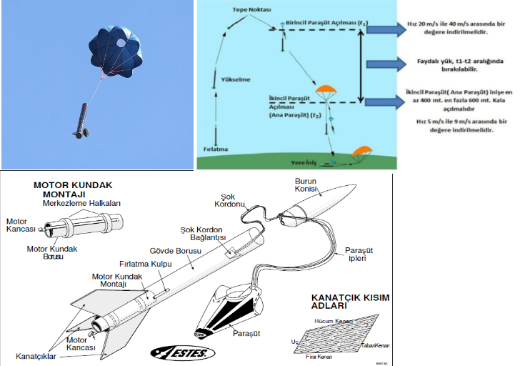

KURTARMA SİSTEMİ
Roket kurtarma sisteminin tasarımı, TEKNOFEST gibi yarışmalar için oldukça önemlidir.
Kurtarma sistemi sayesinde atıştan sonra roketin sağlam bir şekilde kurtarılması sağlanır ve böylelikte roket tekrar kullanılabilecek durumdadır.
Paraşüt
- Kurtarma sistemi olarak paraşüt kullanılmalıdır. Paraşütlerin uzaktan gözle rahat tespit edilebilmesi için kesinlikle beyaz ve mavi renklerde olmamalıdır.
- Kullanılacak paraşütler kademeli olarak tasarlanmalıdır. Birincil, ikincil vs. gibi kurtarılmak istenen alt bileşenlere ve sayısına göre birden fazla paraşüt kullanılabilir.
- Birincil paraşüt ilk açılacak paraşüt olarak tanımlanmaktadır. Birincil paraşüt azamî irtifadan hemen sonra açılacaktır.
- İkincil paraşüt ana paraşüt olarak tanımlanmaktadır. Ana paraşüt en erken yere 600 m ve en geç 400 m kala açılmalıdır.
- Roketin ve parçaların hasar görmemesi için ana paraşütle taşınan yüklerin hızı azami 9 m/s, asgari ise 5 m/s olmalıdır.
Faydalı Yük
- Faydalı yükün kütlesi asgari dört (4) kg olmalıdır.
- Faydalı yük burunda konumlandırılmayacaktır.
- Faydalı yük, roketin çıkacağı tepe noktasına erişmesinden hemen sonra birinci paraşüt açıldıktan sonra ikinci paraşüt açılmadan önceki zaman diliminde serbest bırakılacaktır.
- Burun ile roketin geri kalanı (gövdesi) birbirine bağlı olarak indirileceğinden faydalı yük, roket ve burun ile herhangi bir bağlantısı olmadan tek başına kendi paraşütü ile “bağımsız” olarak inecektir.
